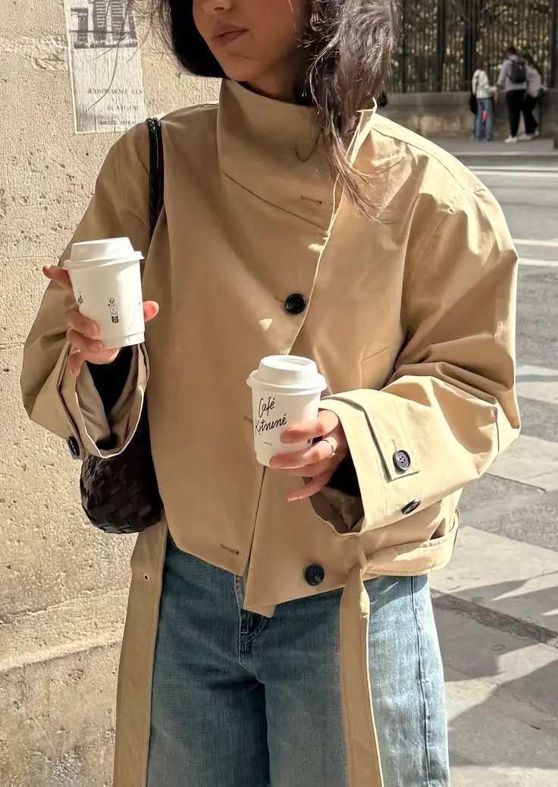
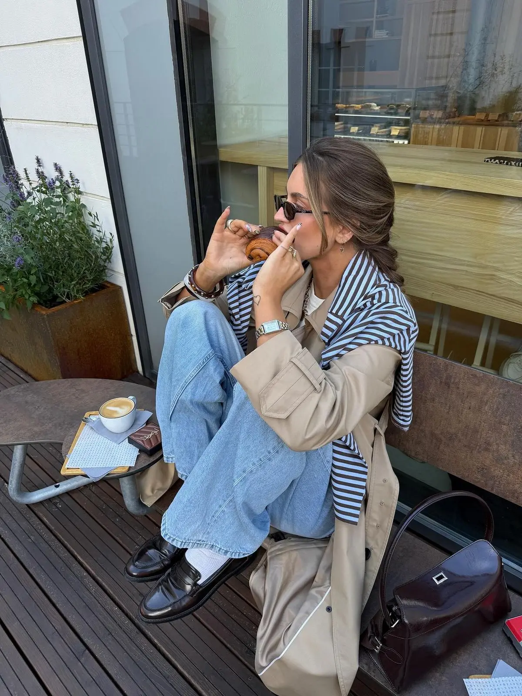
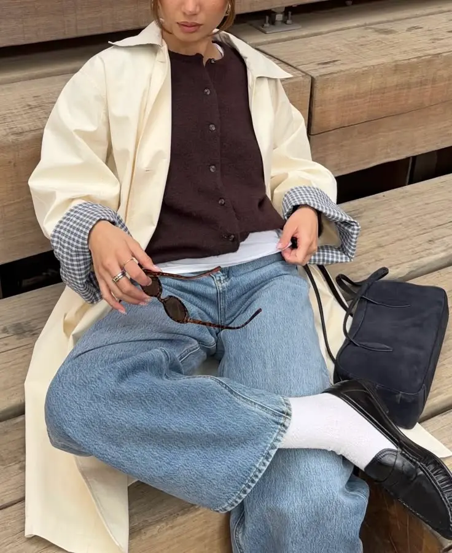
AUTUMN EDIT
What to wear this autumn
Think worn-in basics, heavy knits and a palette pulled straight from the trees — camel, olive, charcoal and every shade of brown. Nothing precious, everything layered.
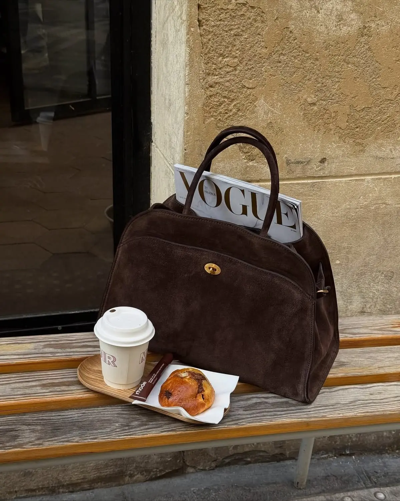
AUTUMN EDIT - TRENDS
Three trends worth wearing
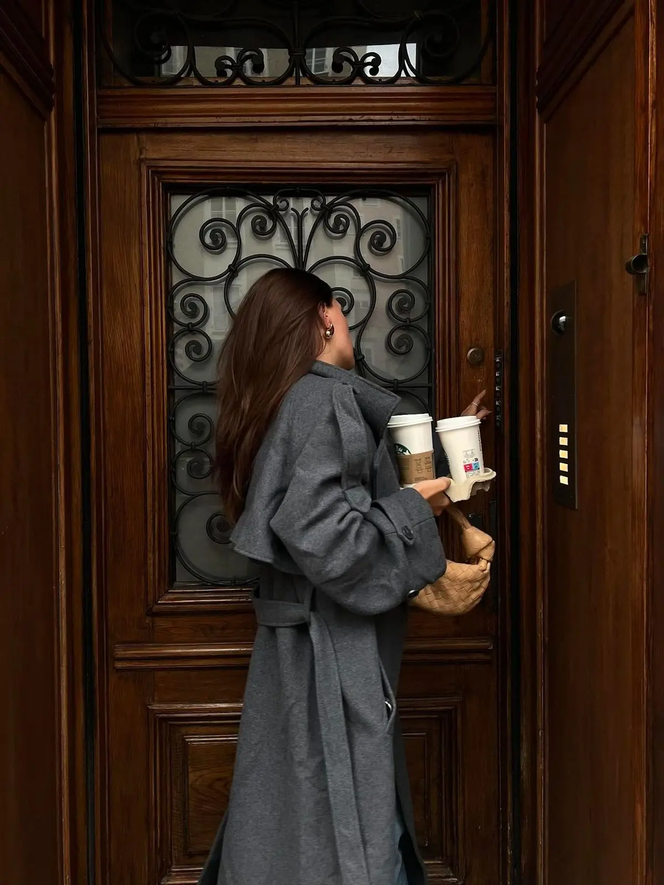
01 The Wool Coat
Still the season's most worn layer - belted, oversized, worn open over almost anything.
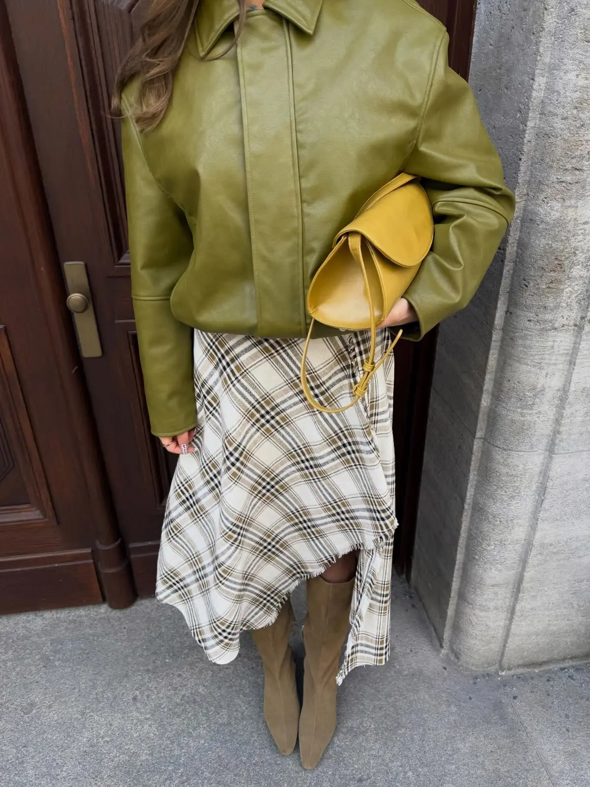
02 Leather & Plaid
An unexpected pairing - a cropped leather jacket over a swinging plaid skirt.
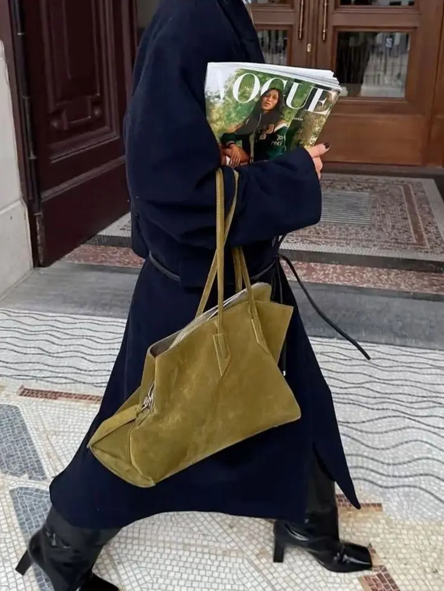
03 The Suede Bag
An oversized suede tote, carried with a tailored coat and your favourite magazine.
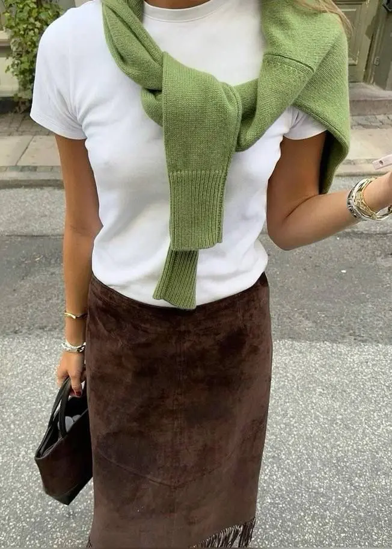
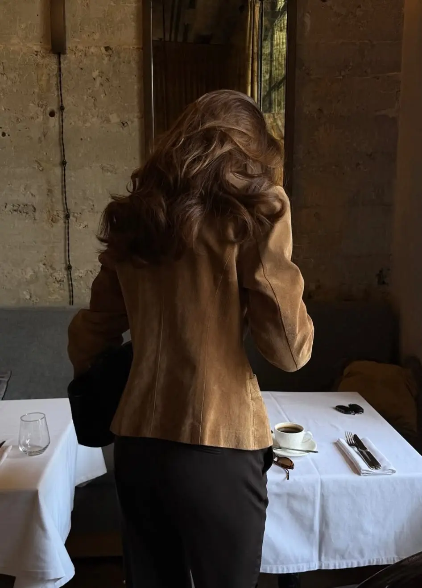
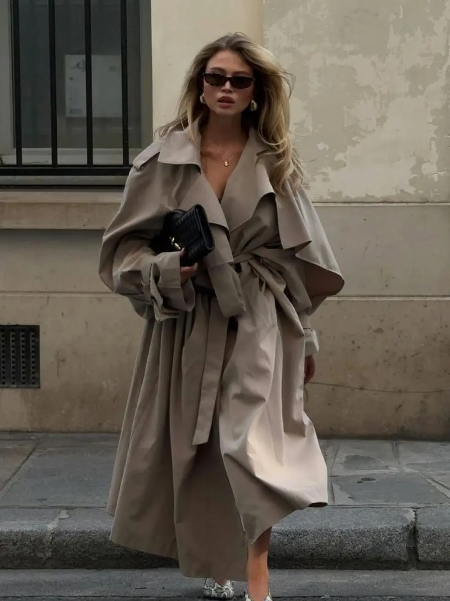
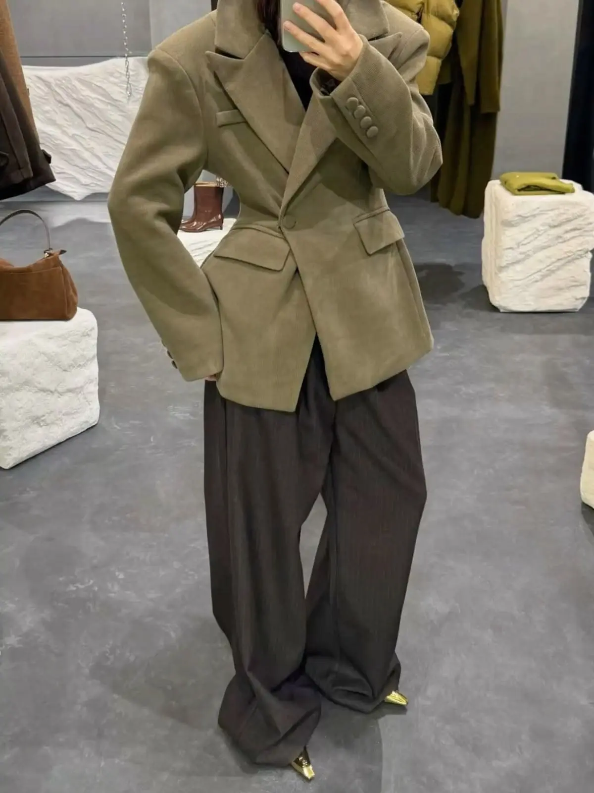
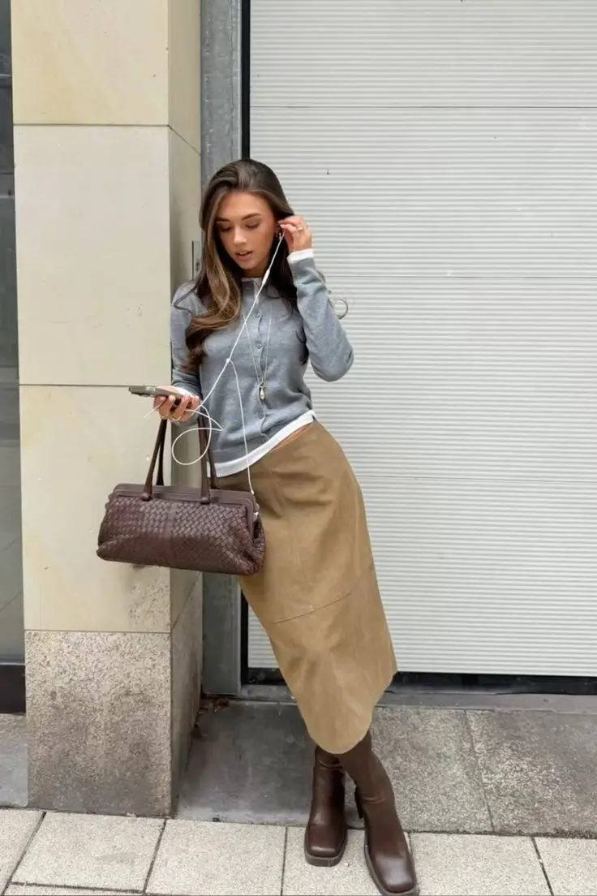
SEASONAL EDIT
Colours of the season
Cocoa
Olive
Charcoal
Denim
Camel
FEATURED LOOK
Suede, head to toe
Dressed up with heels, or dressed down with boots and a knit underneath. Find more autumn outfit ideas on Pinterest.
SEE MORE ON PINTEREST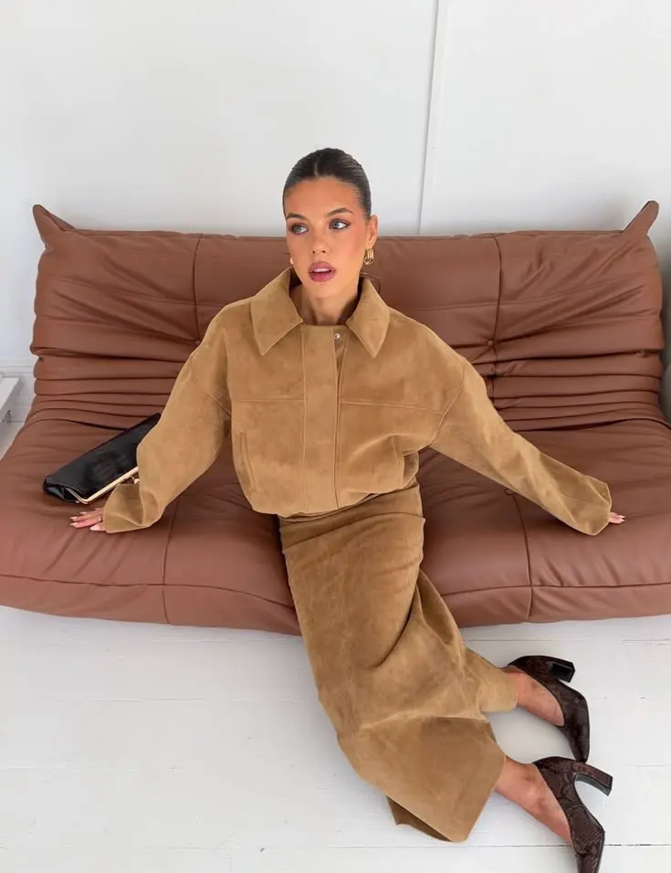